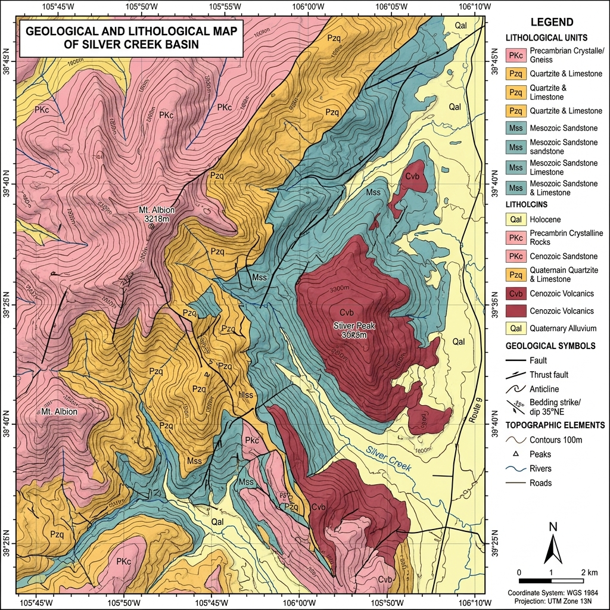
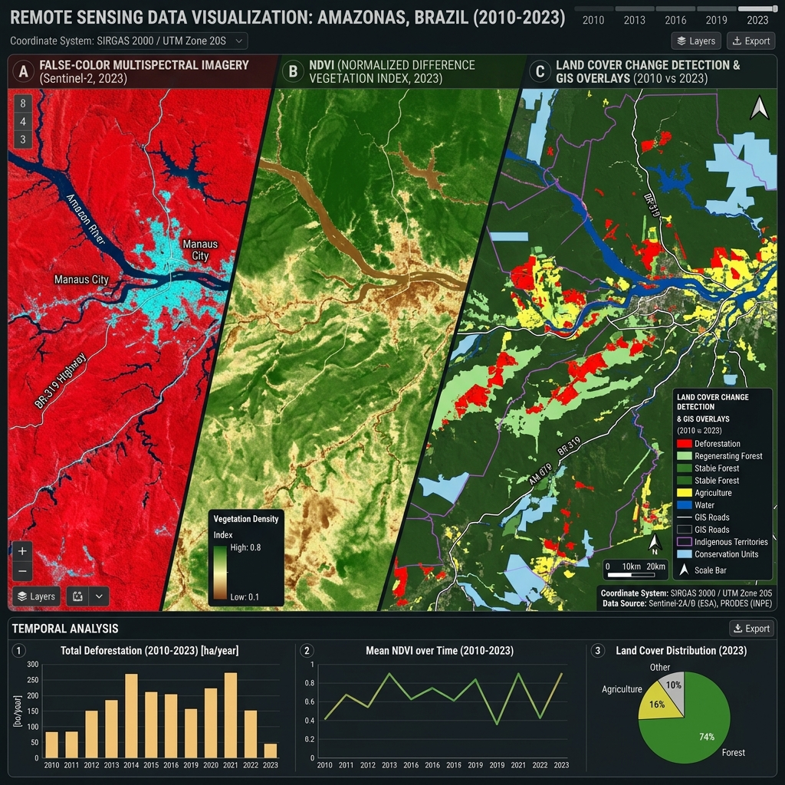
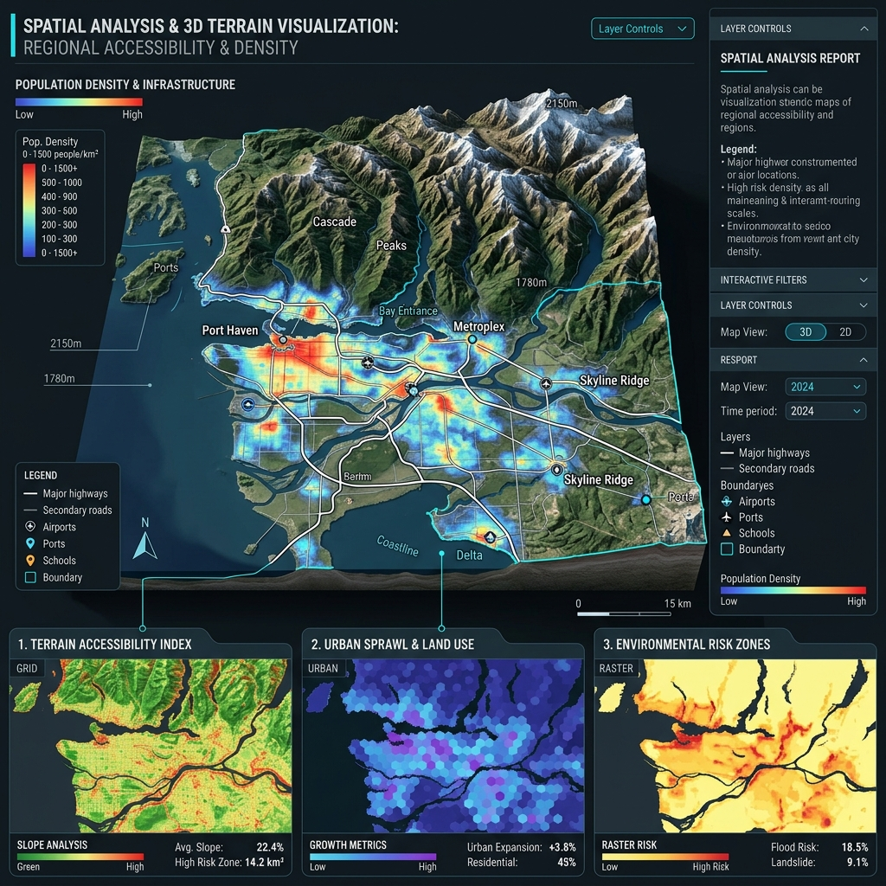
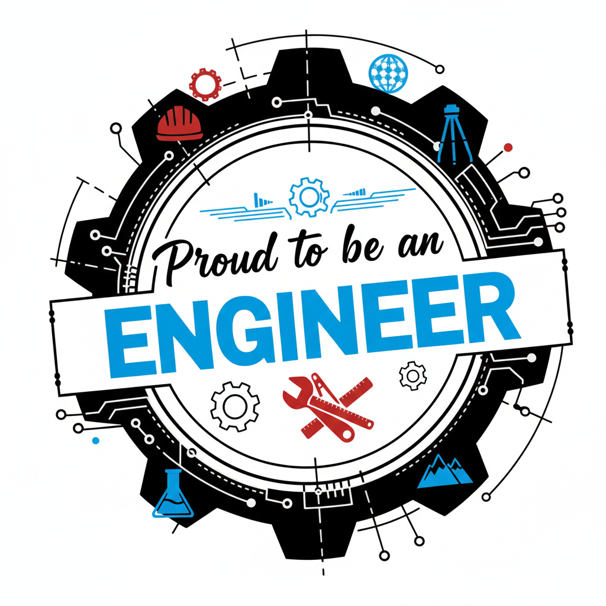
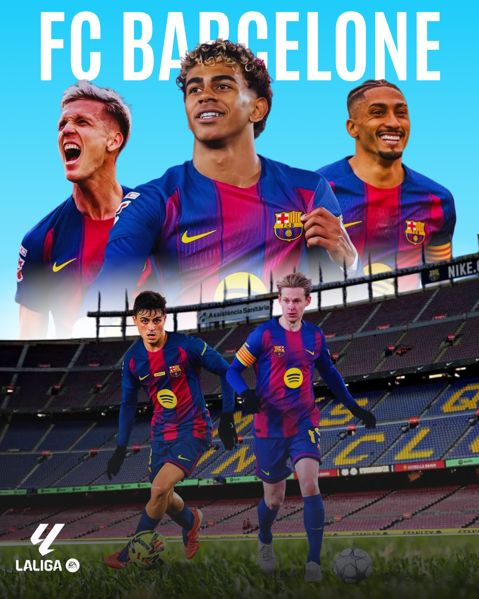
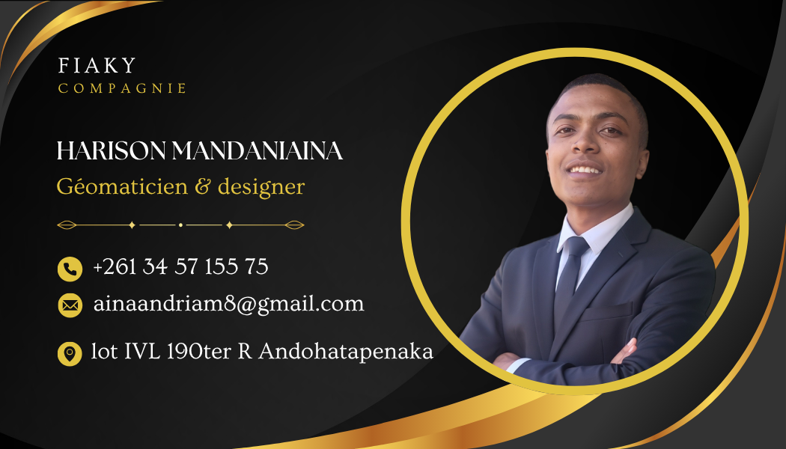
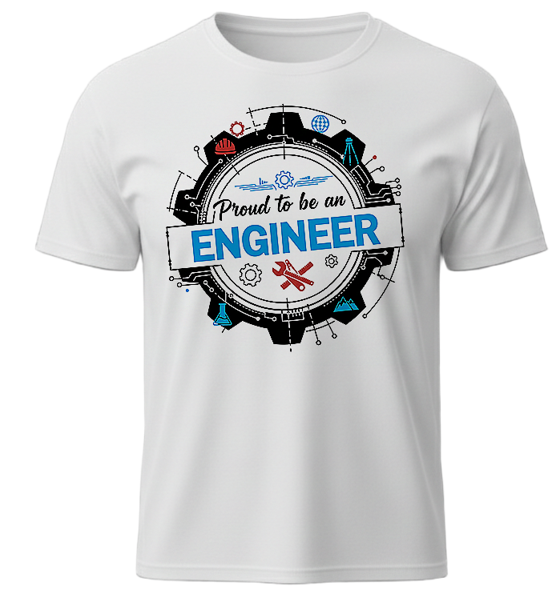
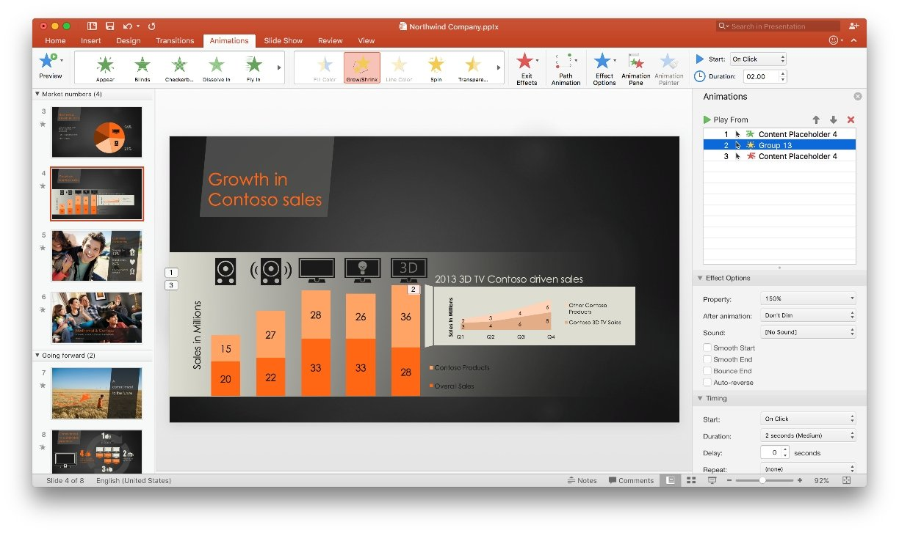

Étudiant en génie géologique spécialisé en géomatique à l'Ecole Supérieure Polytechnique d'Antananarivo et designer créatif. Je fusionne la rigueur de l'analyse cartographique et la force de l'expression visuelle pour concevoir des projets uniques et impactants.
Actuellement étudiant en Génie Géologique spécialisé en géomatique à l'École Supérieure Polytechnique d'Antananarivo, je cultive une double compétence unique. D'un côté, j'analyse les données terrestres à l'aide d'outils cartographiques avancés (SIG). De l'autre, j'exprime ma créativité en tant que designer freelance.
Je conçois des chartes graphiques de marque, réalise des supports visuels d'impact sur Canva, et structure des présentations PowerPoint modernes pour les entreprises, conférences ou soutenances académiques.
Maîtrise de la cartographie numérique et du traitement des données terrain.
Conception de supports esthétiques, lisibles et adaptés à votre cible.
Géologue & Designer
Formation théorique et pratique approfondie : cartographie géologique, géotechnique, analyse structurale, hydrogéologie et maîtrise des systèmes d'information géographique (SIG).
Développement du sens relationnel, de la communication professionnelle, et techniques d'élaboration d'un réseau professionnel solide pour le freelancing.
Programmes internationaux axés sur la gestion des risques, la protection de l'enfance, le travail d'équipe bienveillant et la gestion de groupes de jeunes.
Solide formation scientifique de base (Mathématiques, Sciences Physiques et Sciences de la Vie et de la Terre).

Conception de cartes de localisation, cartes thématiques et lithologiques précises sous QGIS pour l'analyse spatiale et l'aménagement du territoire.

Traitement et analyse d'images satellites pour suivre l'évolution des territoires, cartographier l'occupation du sol et détecter les changements environnementaux.

Identification des relations spatiales entre données géographiques pour la planification territoriale, la gestion des ressources et la numérisation des données terrain.

Conception de logos uniques, professionnels et mémorables (ex: ingenieur, F'TiaArt) reflétant l'identité, les valeurs et la vision d'entreprises sur Canva.

Création d'affiches modernes et attrayantes pour promouvoir des produits, des services ou des événements, pensées pour capter l'attention de l'audience.

Design personnalisé de cartes de visite professionnelles mettant en valeur votre identité de marque et laissant une impression durable auprès de vos partenaires.

Création de motifs visuels originaux pour impressions textiles et t-shirts personnalisés adaptés à la communication de marque et au merchandising.

Conception de diaporamas PowerPoint modernes, clairs et dynamiques pour les entreprises, soutenances académiques de mémoire et conférences.
Que ce soit pour un recrutement en tant que géomaticien SIG, une collaboration de design freelance, ou la refonte de vos présentations PowerPoint corporatives, je suis à votre écoute.